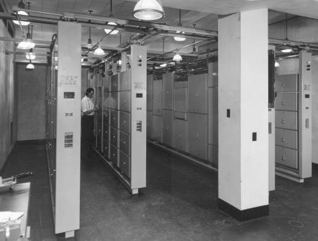
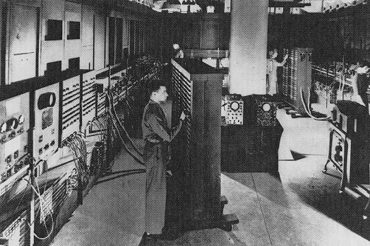
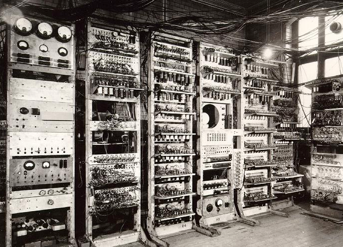
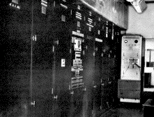

| Computador Bell |
Bell Telephone Laboratories |
Velocidade de processamento é muito maior que as mecânicas, se diferenciando dos anteriores pela possibilidade de ser executado continuamente e uma baixa necessidade de manutenção e poucos erros de cálculo. |

|
| ENIAC |
Eletronic Numerical Integrator and Calculator |
Esse computador é composto por diversas válvulas, sendo cerca de 18.000 válvulas, 70.000 resistores e 10.000 capacitores. Desta forma, consumia uma quantidade de energia alta (150 Kwatts) e ocupava um grande espaço. Obs: sua arquitetura aumentou a velocidade em 1000 vezes. |

|
| Mark I |
Segunda Guerra Mundial (Manchester) |
Foi baseado em relés (um tipo de circuito eletrônico), se caracterizando como a primeira máquina capaz de fazer uma sequência de operações aritméticas a partir de um conjunto de instruções, composto por uma memória RAM de 32 bits, ou seja, 32 palavras, equivalendo a 1024 bits. |

|
| EDVAC |
Von Neumann |
Foi introduzido o conceito de armazenamento, e Von Neumann introduziu um novo conceito, utilizando cartões perfurados para introduzir os programas, da mesma forma que eram feitos a introdução dos dados. |

|
| Foi inserido também os primeiros periféricos, como as unidades de fita magnética, impressoras, entre outros. |